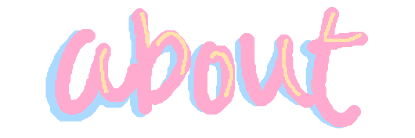

BIO
Hey! I'm T, or Scott, and I've been iterating on my website for the past FOUR YEARS.
I'm from Sri Lanka!
I'm studying physics at university, and I dabble in digital art on the side. My timezone is GMT+0! I also like
conventions (volunteering and plain old attending) and arcades (specifically arcade rhythm games!) I am
also a huge nerd. Unbearably so. To a detriment.
TECH
I'm super passionate about FLOSS! My workstation runs Fedora, and I use a mostly degoogled Android.
I also attempted to use a flipphone (the Kyocera 902KC) but it sploded on me (/hj), so now it's just a pretty
paperweight.
I draw on Krita, and my drawing tablet is a Huion HS64! I am also getting into animating, and I animate on
Tahoma2D!
MEDIA
In terms of music, I will literally listen to anything. My favourite artists are Cynthoni, c678924, goreshit, HALLEY LABS, Deftones, Heaven Pierce Her, and I am unhealthily obsessed with this ARG/fan album based on DELTARUNE's Blood Crushers. Seriously, I think I've listened to it like 60 times.
As for games and shows, I like so many things it's hard to keep track of it all, so just. Okay, just take my Steam, last.fm, and AniList. Just take it and leave. I also like Homestuck. And Deadpool (from the comics), an unhealthy amount.
SOCIAL
Hey! If you're on this marquee, you're cool!